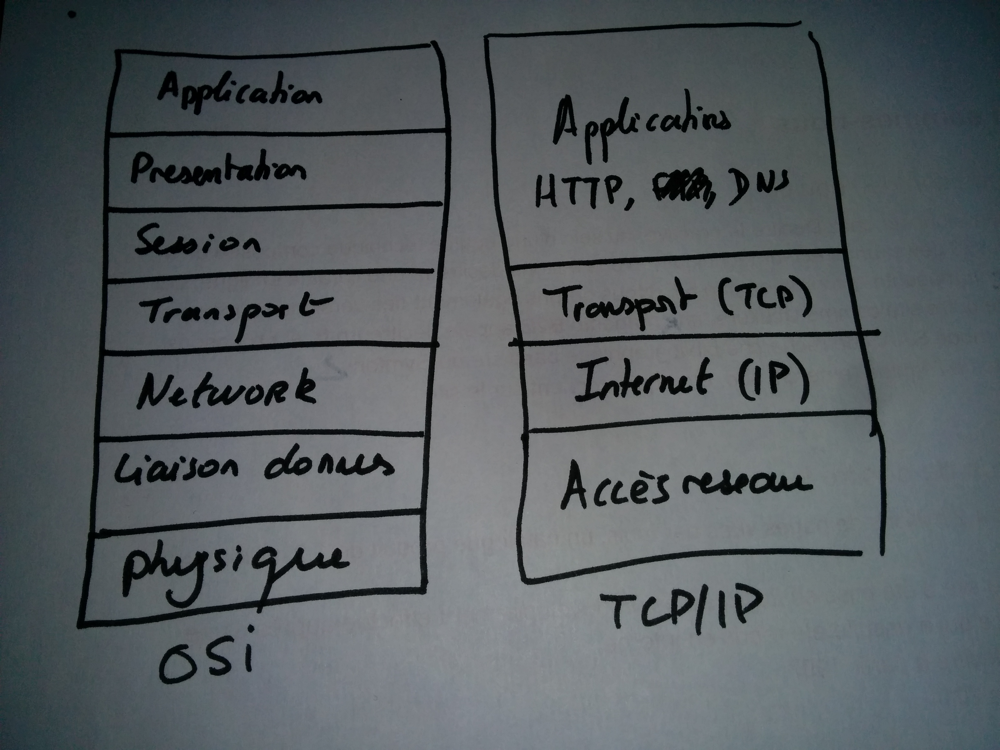
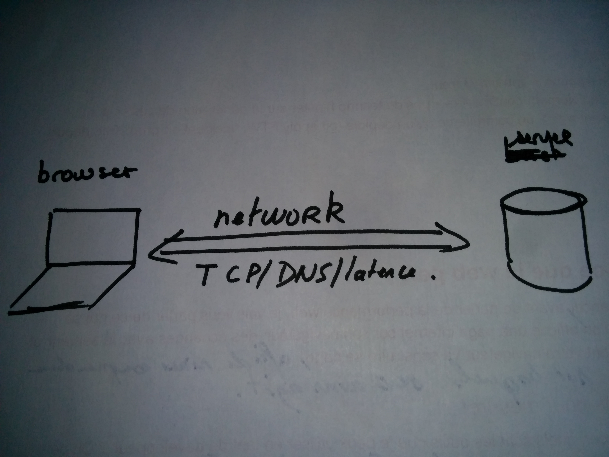
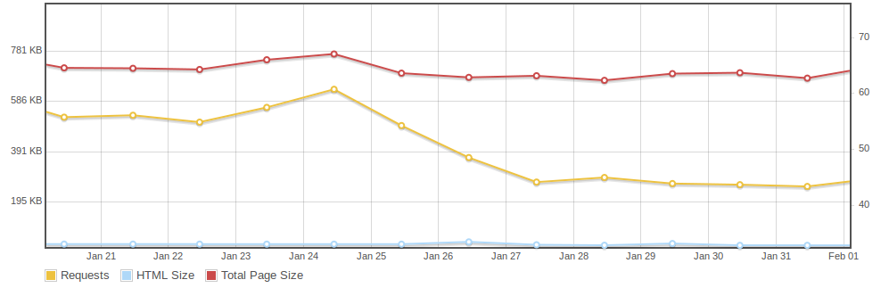
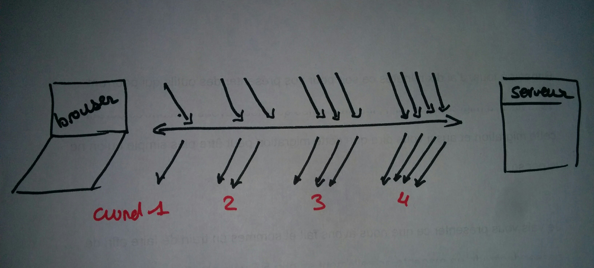
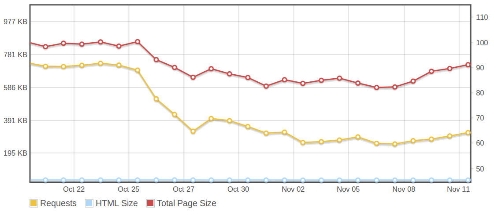

De 7 à 3s : retour d’expérience sur la performance Web sur decitre.fr
AFUP Lyon - 19 avril 2016
@srogier / srogierDecitre.fr
L'équipe
- 3 développeurs + 1 responsable technique
- une dizaine de personnes hors technique
Le site
- 4,2 millions de pages vues par mois
- 1,3 million de produits
Qu'est-ce que la web perfomance ?
Afficher au plus vite son site Internet
L'importance de la performance web
- Corrélation performance technique et performance business
- Impact sur les nombre de pages, le rebond, la conversion
Qu’est-ce que le Web ?
Qu’est-ce que le Web ?
Optimiser le serveur
Mesurer les performances
- New relic
- Blackfire
Migrer vers PHP 7
- Pas encore fait en prod
- optimisation du temps de traitement entre 20% et 40%
L'importance du réseau

L'importance du réseau

Anatomie d’un hit HTTP

Anatomie d’un hit HTTP

Faire moins de requêtes
Supprimer les images inutiles
Image moche
Code HTML bouton moche
Utiliser des sprites
- Concaténation d'images en une seule
- 1 seul hit HTTP
Utiliser des font d'icônes
- 1 fichier (100 icônes) VS plusieurs sprites
- Poids faible : 16 Ko
Utiliser les Data URI
.reduction {
background-image: url('bon_reduction.png');
}
.reduction {
background-image: url('data:image/png;base64,iVBORw0KGgoAAAANSUhEU....');
}
Exemple concret avec le footer
Avant

Après

Exemple concret avec le footer
Gérer le cache
- Cache HTTP
- Durée de validaté configurable
Garder les connexions ouvertes
- Utiliser le Keep-Alive
- Configurer la durée d'ouverture
- Attention à ne pas saturer les serveurs
Garder les connexions ouvertes
Concaténer les assets
Lazy-loader les images
- Charger ce qui est affiché
Lazy-loader les images
Alléger les ressources
Compresser le contenu
- Activer la compression gzip
- Diminution de la bande passante
- Facteur 5 de compression
Minifier les assets
- Suppression des caractères inutiles, simplification du code
- Pas en place chez nous
Utiliser des domaines cookieless
- Alléger les requêtes HTTP
- Création d'un domaine sans cookies pour livrer les images
Optimiser les images
- Sensibiliser sur les risques
- Intégrer un outil pour optimiser
- Nettoyage de nos images
Nettoyer le code mort
- 15% de CSS morte
Réduire les contenus bloquants
Rendre l'exécution du javascript non bloquante
- Descendre les fichiers
- Charger en async
Auditer les scripts externes

Auditer les scripts externes
- Auditez les scripts
- Améliorez leur qualité
Paralléliser les chargements des images
- Augmenter la capacité à paralléliser
- Attention aux coûts du sharding
Charger différement les iframe
- Charger en non bloquant
Et ensuite ?
HTTP/2
Autres pistes
Travailler sur le chemin critique du rendu navigateur
Pour aller plus loin
lien en vrac : page speed - yslow doc google + edasf + autre compte twitterImpliquez vos équipes
- Intégrez la web performance dans votre culture d'équipe
- Créez vos process
- Mesurez
- Vendez votre travail
Tout ça pour quels résultats